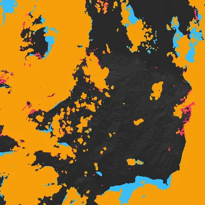
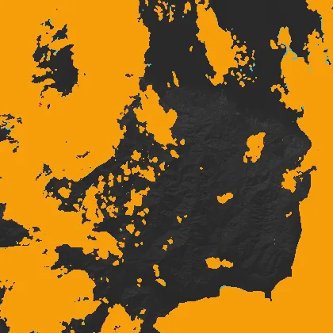
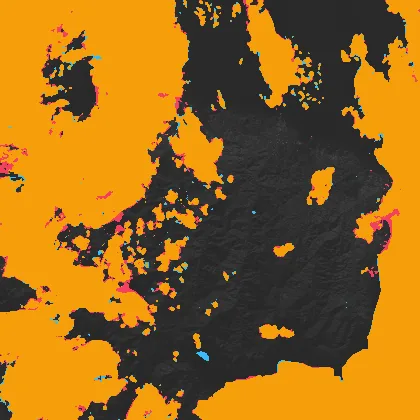
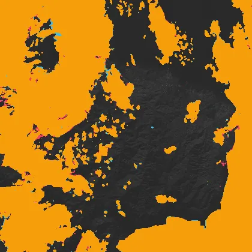
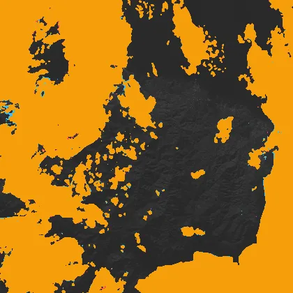

Benchmark / Use cases / Cloud mask / Results / T36SVD-20170104
T36SVD-20170104
Compression ratio and cloud mask
Each point is one level of a codec, named when you point at it, on this sample.
GeoZL PIVCOGeoZL PFORJPEG XLgeorvq
Change in cloud mask
The result from compressed data at each level.cloud on bothlostnew
GeoZL PIVCO
 quant-geozl-med-pivco-rms-tau5, RMSE 4.9
quant-geozl-med-pivco-rms-tau5, RMSE 4.9
3.9× · cloud_iou +0.999quant-geozl-med-pivco-rms-tau10, RMSE 9.49
5.1× · cloud_iou +0.997quant-geozl-med-pivco-rms-tau20, RMSE 19.7
7.1× · cloud_iou +0.991 quant-geozl-med-pivco-rms-tau40, RMSE 38.9
quant-geozl-med-pivco-rms-tau40, RMSE 38.9
9.4× · cloud_iou +0.960
quant-geozl-med-pivco-rms-tau80, RMSE 78.1
11.9× · cloud_iou +0.889GeoZL PFOR
JPEG XL
jpegxl-distance-tau5, RMSE 4.94
4.2× · cloud_iou +1.000jpegxl-distance-tau10, RMSE 9.85
6.1× · cloud_iou +0.999jpegxl-distance-tau20, RMSE 19.8
10.1× · cloud_iou +0.997
jpegxl-distance-tau40, RMSE 39.7
21.5× · cloud_iou +0.991jpegxl-distance-tau80, RMSE 78.8
60.5× · cloud_iou +0.971 georvq

georvq-s2-v1-rung8-0, RMSE 185
287.3× · cloud_iou +0.951
georvq-s2-v1-rung8-1, RMSE 116
132.9× · cloud_iou +0.977georvq-s2-v1-rung8-2, RMSE 88.3
86.5× · cloud_iou +0.986georvq-s2-v1-rung8-3, RMSE 75.6
64.1× · cloud_iou +0.988
georvq-s2-v1-rung8-4, RMSE 68
50.9× · cloud_iou +0.989georvq-s2-v1-rung8-5, RMSE 62.7
42.2× · cloud_iou +0.989georvq-s2-v1-rung8-6, RMSE 58.9
36.1× · cloud_iou +0.990georvq-s2-v1-rung8-7, RMSE 55.9
31.5× · cloud_iou +0.990georvq-s2-v1-rung8-8, RMSE 53.6
27.9× · cloud_iou +0.990